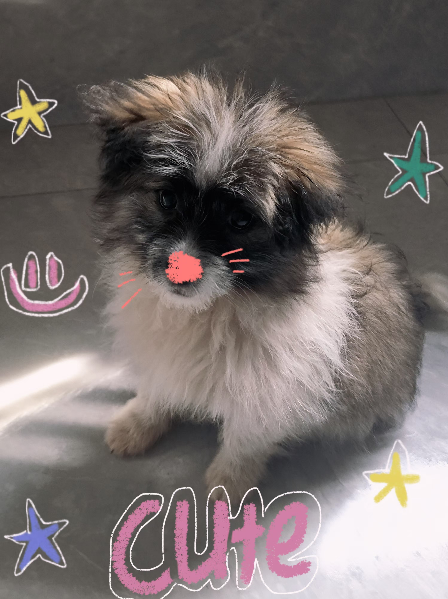

关于我
你好！我是胡兆康，一名热爱生活、喜欢探索新事物的普通人。在这里，我会分享我的日常见闻、学习心得和一些有趣的生活片段。
我相信每个平凡的日子都值得记录，每个小小的进步都值得庆祝。希望通过这个博客，能与你分享我的世界！

这是我的一张生活照

这是我女朋友的小狗
我的第一篇博客
今天是我创建个人博客的第一天！虽然我还是个初学者，但我会努力学习前端技术，不断完善这个空间。
创建这个博客的初衷是想要有一个记录自己成长的地方。无论是一个编程项目的突破，一次旅行的见闻，还是一本好书的读后感，我都希望能在这里与你分享。
未来我计划在这里添加更多内容：
- 我的学习笔记和教程
- 旅行照片和游记
- 读书和观影心得
- 生活小技巧分享